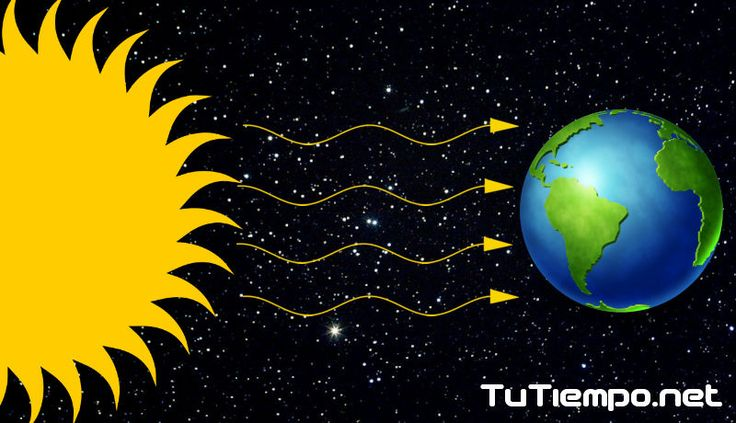

Conoce qué es, cómo afecta y por qué es importante entender la radiación en ecosistemas de altura
⬅ Volver al inicioLa radiación solar es la energía emitida por el sol, que llega a la Tierra en forma de luz visible, rayos ultravioleta (UV) e infrarrojos. Esta radiación es vital para la vida, ya que regula el clima y permite la fotosíntesis.
La Laguna La Mica se encuentra a más de 3.900 msnm, donde la radiación solar es más intensa. Esto tiene efectos como:
Contáctanos a través del correo info@lamica.ec o por WhatsApp: +593 98 049 1612